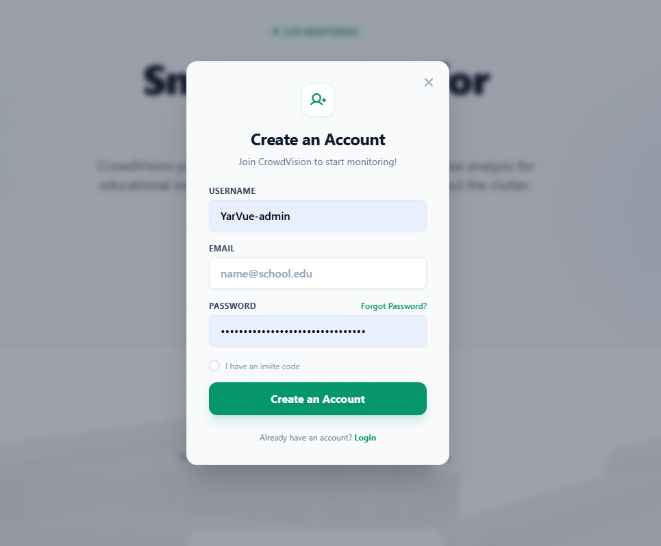
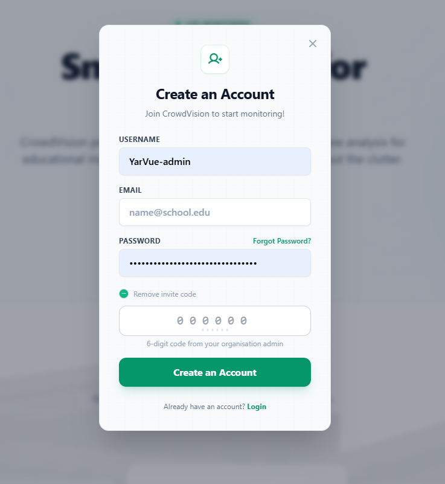

/
User Guide
There are three ways to get a CrowdVision account. This page covers each. The diagram below helps you pick the right one.
flowchart TD
Q{"How are you joining?"}
Q -->|"On my own"| S["Standard account<br/>(leave OTP blank)"]
Q -->|"Invited to an organization"| O["Account with OTP<br/>(enter the invite code)"]
Q -->|"Setting up an organization"| B["Business account<br/>(contact CrowdVision)"]A standard account lets you explore public domains and view building digital twins.

Figure 1 — The sign-up form. Leave OTP blank for a standard account.
If you are joining an existing organization (for example as staff), register with a one-time code. This grants the correct role and links you to the organization’s domain immediately.

Figure 2 — Registering with an invite code in the OTP field.
Keep the authenticator entry — you will use it again if your organization enforces two-factor sign-in.
Organizations manage their own buildings through isolated domains. Because domains need custom setup, business accounts are not created through the public sign-up page.
university.edu), and whether it should be public or private.Next: sign in to your account.